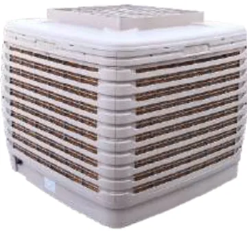

Aolan Wind Supremo
مكيف صحراوي صناعي بتدفق 18,000 م³/ساعة
أكثر مكيفات أولان الصناعية مبيعاً بتدفق 18,000 م³/ساعة. سحب هواء من الجهات الأربع وضغط استاتيكي 190 باسكال يناسب مجاري الهواء، مع إمكانية التصريف العلوي أو السفلي أو الجانبي. متوفر بتحكم سيليكون أو إنفرتر، وبنسخة ثلاثية الطور، وبخزان مياه عميق للمواقع ذات إمداد المياه غير المستقر.
الموديل: AZL18-ZX10E, AZL18-ZS10E, AZL18-ZC10E, AZL18-ZX10G, AZL18-ZS10G, AZL18-ZC10G, AZL18-ZX32E, AZL18-ZS32E, AZL18-ZC32E
المواصفات الفنية
| الموديل | AZL18-ZX10E AZL18-ZS10E AZL18-ZC10E | AZL18-ZX10G AZL18-ZS10G AZL18-ZC10G | AZL18-ZX32E AZL18-ZS32E AZL18-ZC32E | AZL18-ZX10E AZL18-ZS10E AZL18-ZC10Eخزان مياه عميق |
|---|---|---|---|---|
| مصدر الكهرباء | 110/220 V، 50/60 Hz، أحادي الطور | 110/220 V، 50/60 Hz، أحادي الطور | 380–415 V، 50/60 Hz، ثلاثي الطور | 110/220 V، 50/60 Hz، أحادي الطور |
| القدرة | 1.1 kW | 1.1 kW | 1.1 / 0.37 kW | 1.1 kW |
| التيار المقنن (أمبير) | 5.6 | 4.8 | 2.0 / 0.85 | 5.6 |
| تدفق الهواء (م³/ساعة) | 18,000 | 18,000 | 18,000 / 11,000 | 18,000 |
| نوع المروحة | محوري | |||
| سرعة المروحة | متعدد السرعات، تحكم سيليكون | متعدد السرعات، إنفرتر | ثلاثي الطور، سرعتان | متعدد السرعات، تحكم سيليكون |
| الضغط الاستاتيكي (باسكال) | 190 | 190 | 190 / 63 | 190 |
| مقاس فتحة الهواء (مم) | 650×650 (سفلي/علوي)، 720×660 (جانبي) | |||
| مستوى الضوضاء (ديسيبل) | ≤76 | |||
| الأبعاد ط×ع×ار (مم) | 1150×1150×950 (سفلي)، 1150×1150×982 (علوي)، 1205×1150×950 (جانبي) | 1150×1150×950 (سفلي)، 1150×1150×982 (علوي)، 1205×1150×950 (جانبي) | 1150×1150×950 (سفلي)، 1150×1150×982 (علوي)، 1205×1150×950 (جانبي) | 1150×1150×1076 (سفلي)، 1150×1150×1103 (علوي)، 1205×1150×1076 (جانبي) |
| مقاس خلية التبريد (مم) | 620×825×100 | |||
| الوزن الصافي (كجم ±3) | 76 (سفلي)، 86 (علوي)، 79 (جانبي) | 76 (سفلي)، 86 (علوي)، 79 (جانبي) | 76 (سفلي)، 86 (علوي)، 79 (جانبي) | 86 (سفلي)، 91 (علوي)، 90 (جانبي) |
| الوزن أثناء التشغيل (كجم) | 106 (سفلي)، 110 (علوي)، 119 (جانبي) | 106 (سفلي)، 110 (علوي)، 119 (جانبي) | 106 (سفلي)، 110 (علوي)، 119 (جانبي) | 186 (سفلي)، 191 (علوي)، 190 (جانبي) |
| وحدة التحكم | تحكم بشاشة LCD | تحكم بشاشة LCD | أزرار + مفتاح دوّار | تحكم بشاشة LCD |
| فلتر الغبار | اختياري | |||
| التبريد المسبق | اختياري | |||
| التحكم الجماعي | اختياري | |||
| وضع الشفط | اختياري | اختياري | — | اختياري |
| بوابة الهواء (دامبر) | اختياري | |||
| التحكم بالحرارة والرطوبة | اختياري | |||
| عدد الوحدات في حاوية 40HQ (مجمّعة) | 40 | |||
| عدد الوحدات في حاوية 40HQ (SKD مفككة جزئياً) | 70 (سفلي)، 60 (علوي)، 60 (جانبي) | 70 (سفلي)، 60 (علوي)، 60 (جانبي) | 70 (سفلي)، 60 (علوي)، 60 (جانبي) | — |
X = تصريف سفلي، S = تصريف علوي، C = تصريف جانبي
الاستخدامات
المصانع، المساحات شبه المفتوحة، قاعات المعارض، المزارع ومزارع الدواجن والماشية، البيوت المحمية، السوبرماركت.
المواصفات من كتالوج Aolan 2026. قد تتغير الموديلات والمواصفات، يرجى التأكيد قبل الطلب.


تريد سعر Wind Supremo؟
احصل على سعر الجملة والتوفر في باكستان وخيارات الشحن بالحاوية إلى بلدك.